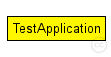
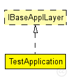

This documentation is released under the Creative Commons license
This documentation is released under the Creative Commons license(no description)
The following diagram shows usage relationships between types. Unresolved types are missing from the diagram. Click here to see the full picture.
The following diagram shows inheritance relationships for this type. Unresolved types are missing from the diagram. Click here to see the full picture.
| Name | Type | Default value | Description |
|---|---|---|---|
| debug | bool | false |
debug switch |
| stats | bool | false |
stats switch |
| trace | bool | false |
trace switch |
| trafficParam | double |
mean time between packets (poisson arrival rate) |
|
| nodeAddr | double |
node address |
|
| dstAddr | double |
packet destination node address |
|
| flood | bool |
send packets continuously |
|
| payloadSize | double |
number of bytes per packet |
|
| nbPackets | double |
number of packets to generate |
|
| headerLength | int |
length of the application message header (in bits) |
| Name | Direction | Size | Description |
|---|---|---|---|
| lowerLayerIn | input |
to receive data from communications stack |
|
| lowerLayerOut | output |
to send data to communications stack |
|
| lowerControlIn | input |
to receive control messages from communications stack |
|
| lowerControlOut | output |
to send control messages from communications stack |
simple TestApplication like IBaseApplLayer { parameters: bool debug = default(false); // debug switch bool stats = default(false); // stats switch bool trace = default(false); // trace switch double trafficParam @unit(s); // mean time between packets (poisson arrival rate) double nodeAddr; // node address double dstAddr; // packet destination node address bool flood; // send packets continuously double payloadSize @unit(byte); // number of bytes per packet double nbPackets; // number of packets to generate int headerLength @unit("bit"); // length of the application message header (in bits) gates: input lowerLayerIn; // to receive data from communications stack output lowerLayerOut; // to send data to communications stack input lowerControlIn; // to receive control messages from communications stack output lowerControlOut; // to send control messages from communications stack }
This documentation is released under the Creative Commons license